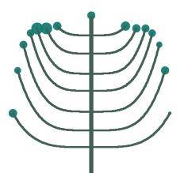
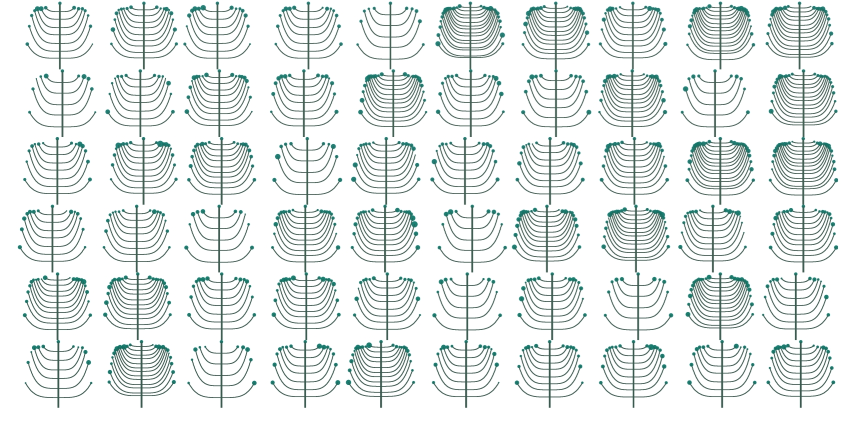

Week 1: Araucária¶
From Wikipedia:
> Araucaria (/ærɔːˈkɛəriə/; original pronunciation: [a.ɾawˈka. ɾja])[4] is a genus of evergreen coniferous trees in the family Araucariaceae. There are 20 extant species in New Caledonia (where 14 species are endemic, see New Caledonian Araucaria), Norfolk Island, eastern Australia, New Guinea, Argentina, Chile, and Brazil.
The prompt¶
Araucária was the very first prompt for the Dear-Gen project. The other options offered to Régis Frias were spider web, and oca indígena. All three images came to my head during a train ride between Amsterdam and Rotterdam, while the idea for the project materialized.
The creative process¶
When talking about generating tree with code, one is likely to come across Lindenmayer systems, or L-systems. Danniel Shifman has an excellent tutorial on the subject, which is a great way to familiarize yourself with L-systems and their possibilities. I was not able to find any L-system remotely close to the araucária image I wanted, and quickly gave up trying to come up with a set of productions to achieve that. The next idea I explored was to use polynomial curves to draw branches, and use a mere circle to represent the leaves.
Once the basic shape seemed ok, the next step was to create several copies of it, and somehow distribute them on the canvas.
